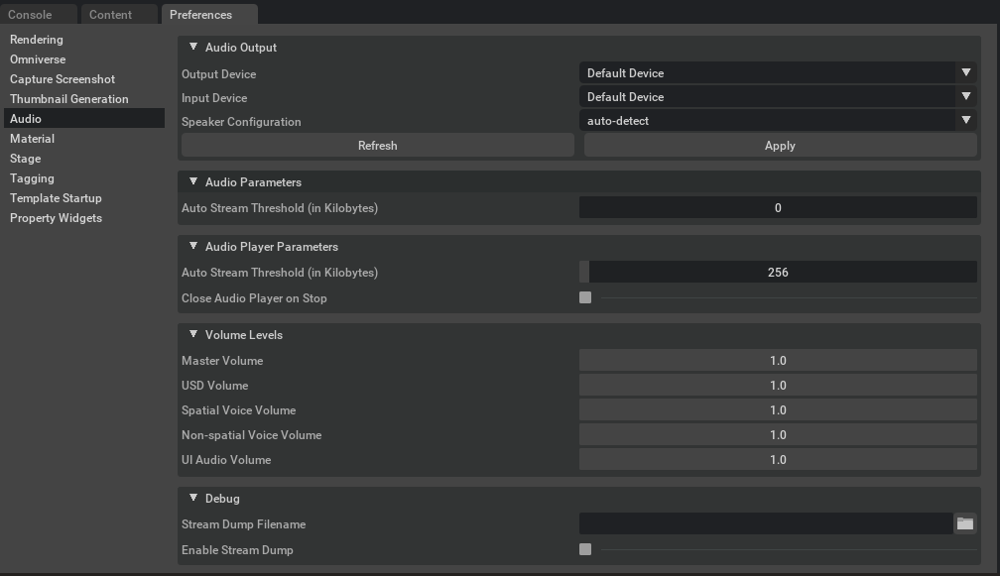

Preferences#
The Preferences panel is found under Edit > Preferences and hosts a list of settings that are
applicable to the current app. Here we list the most commonly modified ones. These settings apply to the entire application and are not stored with individual USD stages.
Audio#
There are some application preferences that can help to control the behavior of audio output globally in Omniverse USD Composer. These preferences affect all USD stages loaded in Omniverse USD Composer. These settings are not stored as part of the USD stage. The app preferences window can be opened by going to the Edit menu and choosing Preferences. The audio preferences can be found by selecting Audio in the sections list on the left.

Audio Output#
Input and Output device preferences.
Option |
Description |
|---|---|
Output Device |
Displays a drop-down box containing the names of all audio output devices connected to the system. This may be used to select the desired device for output in Omniverse USD Presenter. This affects output for the main USD stage and all UI audio. Once a device is selected from the list, the Apply button must be pushed to accept the change. Changing both this setting and the speaker configuration below will cause the output of all open audio contexts to be changed. If the state of devices attached to the system has changed recently (that is: a new device was connected or a device was disconnected from the system), the Refresh button can be used to collect the new device list. By default, the system’s default output device will be chosen.
If the selected device is disconnected from the system between launches of Omniverse USD Presenter or the device list changes between launches, the previously selected device will attempt to be found first on the next launch. If it is still attached to the system, it will be used. If it could not be found in the device list, the system’s default output device will be used instead.
|
Input Device |
Displays a drop-down box containing the names of all audio input devices connected to the system. This may be used to select the desired device to use for recording in Omniverse View. This affects input for all USD stages. Once a device is selected from the list, the Apply button must be pushed to accept the change. The input device is unaffected by the “Speaker Configuration” setting. If the state of devices attached to the system has changed recently (that is: a new device was connected or a device was disconnected from the system), the Refresh button can be used to collect the new device list. By default, the system’s default input device will be chosen.
If the selected device is disconnected from the system between launches of Omniverse USD Presenter or the device list changes between launches, the previously selected device will attempt to be found first on the next launch. If it is still attached to the system, it will be used. If it could not be found in the device list, the system’s default output device will be used instead.
|
Speaker Configuration |
Sets the speaker configuration to use for output. All configurations are supported regardless of the device’s capabilities (that is: a 5.1 configuration is still supported on a stereo device). In the case the output mode is not directly supported by the selected device, the final output of the audio system will be down-mixed to the device’s preferred configuration. As much of the original stream as is possible will be preserved in the down-mixed output.
If the “auto-detect” configuration is selected, the output will try to match the device’s preferred format. Note that this could result in extra processing requirements on some devices due to the larger number of speaker channels.
The Apply button must be pushed (or Omniverse USD Composer relaunched) after changing this setting for this to take effect. The Refresh button refreshes the device lists for audio input and output. If a new device is connected to the system or an existing device is removed, pushing this button will refresh the device lists to reflect the new device sets for both input and output.
Note: this button may disappear in the future in favor of auto-detecting system device changes.
|
Apply |
Applies all changes to the audio input and output device selections. This will have no effect if none of the options have changed. However, if a device is in use at the time (that is: actively recording audio or actively playing audio in a stage), this could result in a brief interruption in audio. It is best to ensure that all audio recording and playback has been stopped before pushing this button.
|
Audio Parameters#
Option |
Description |
|---|---|
Auto Stream Threshold |
Defines the asset size at which the audio system will decide to stream a compressed audio asset instead of decompress it into memory. This threshold is expressed in kilobytes. If this is set to zero the auto-streaming feature will be disabled. If this is set to any larger value, any compressed audio asset with a decompressed size larger than this threshold will be streamed from the original compressed object instead of being decompressed. The benefit of this is lower memory usage and faster asset loading. However, streaming sounds do require slightly more processing time. The default value is 0KB.
|
Audio Player Parameters#
Option |
Description |
|---|---|
Auto Stream Threshold |
Defines the asset size at which the audio player will decompress a compressed asset on-the-fly during playback instead of decompressing it into memory on load. This has the benefit of using less memory and allowing playback to start sooner (for large assets at least). This threshold is expressed in kilobytes. If set to zero, all assets will be decompressed before playing. If set to a non-zero value, any compressed asset with a decompressed size larger than this value will be decompressed as it plays. This defaults to 256KB.
|
Close Audio Player on Stop |
Determines whether the audio player will close on its own once the first playback of a sound completes. This is useful when previewing large numbers of audio assets from the content browser. If this option is left unchecked, the audio player window will remain open after playback completes. This defaults to unchecked.
|
Volume Levels#
Adjust volume properties of sounds.
Option |
Description |
|---|---|
Master Volume |
Defines the master volume level for all audio output. All other volume levels are effectively multiplied by this volume level to get the final overall volume. Setting this to 0.0 will result in silence (though audio data will still be fully processed). Setting this to 1.0 will be full volume. The volume level changes linearly across this range. This defaults to 1.0.
If the selected device is disconnected from the system between launches or the device list changes between launches, the previously selected device will attempt to be found first on the next launch. If it is still attached to the system, it will be used. If it could not be found in the device list, the system’s default output device will be used instead.
|
USD Volume |
Defines the volume level to be used by all audio for the USD stage audio output. This affects all spatial and non-spatial sounds. Setting this to 0.0 will result in silence (though audio data will still be fully processed). Setting this to 1.0 will be full volume. The volume level changes linearly across this range. This defaults to 1.0.
|
Spatial Voice Volume |
Defines the volume level to be used for all spatial sounds in the USD stage. This volume level is effectively multiplied by the “USD Volume” level setting as well before output to get the final volume level for spatial sounds. Setting this to 0.0 will result in silence (though audio data will still be fully processed). Setting this to 1.0 will be full volume. The volume level changes linearly across this range. This defaults to 1.0.
|
Non-spatial Voice Volume |
Defines the volume level to be used for all non-spatial sounds in the USD stage. This volume level is effectively multiplied by the “USD Volume” level setting as well before output to get the final volume level for non-spatial sounds. Setting this to 0.0 will result in silence (though audio data will still be fully processed). Setting this to 1.0 will be full volume. The volume level changes linearly across this range. This defaults to 1.0.
|
UI Audio Volume |
Defines the volume level to be used for all UI audio sounds in Omniverse USD Presenter. Setting this to 0.0 will result in silence (though audio data will still be fully processed). Setting this to 1.0 will be full volume. The volume level changes linearly across this range. This defaults to 1.0.
|
Debug#
Sound debugging options.
Option |
Description |
|---|---|
Stream Dump Filename |
Defines the filename to be used when dumping the USD stage audio output to file. This will be written out in WAVE file format regardless of the extension on the filename. The channel count and data format will match the current output device’s selected channel count and format. This file will be written to disk as audio is played and will always try to remain within a few milliseconds of audio away from what is playing on the device (as close as possible).
The output file must be on a local file volume. Sending output to an Omniverse location is not supported. Once stream dumping is enabled, the output file will be created and it will be written to as new audio data is produced. The output will continue until stream dumping is disabled or The Omniverse App is exited. The default value for this setting is an empty string.
Note that as long as this feature is left enabled, data will continue to be written to the output file. Since this is written as uncompressed data, this file will tend to grow rather quickly. For example, a 48KHz stereo floating point signal will write approximately 22MB per minute. For this reason, the “Enable Stream Dump” setting is not persistent in this Omniverse app’s user configuration. It will always be off when the Omniverse App launches.
|
Enable Stream Dump |
Defines whether stream dumping is currently enabled. As soon as this is enabled and a valid filename is selected in “Stream Dump Filename”, writing to the output file will begin. Stream dumping will continue until this setting is disabled or this Omniverse app is exited. This setting does not persist in this Omniverse app’s user configuration. It will always be disabled on a fresh launch.
|
Capture Screenshot#
Capture Screenshot#
Option |
Description |
|---|---|
Path to Save Screenshots |
The path where captured screenshots are saved.
|
Capture only 3D viewport |
Checked (Default): Will only Capture the Viewport.
Unchecked: Captures Interface and Viewport.
|
Datetime Format#
Datetime Format#
Option |
Description |
|---|---|
Display Date As |
Sets the format of the datetime string in the screenshot filename.
MM/DD/YYYY (Default): Month/Day/Year
DD.MM.YYYY: Day.Month.Year
DD-MM-YYYY: Day-Month-Year
YYYY-MM-DD: Year-Month-Day
YYYY/MM/DD: Year/Month/Day
YYYY.MM.DD: Year.Month.Day
|
Developer#
Throttle Rendering#
Option |
Description |
|---|---|
Async Rendering |
Toggles asynchronous rendering. This defaults to unchecked. |
Skip Rendering While Minimized |
Toggles skipping rendering while the viewport is minimized. This defaults to unchecked. |
Yield ‘ms’ while in focus |
Sets the amount of time [ms] to yield while the viewport is in focus. This defaults to 0ms. |
Yield ‘ms’ while not in focus |
Sets the amount of time [ms] to yield while the viewport is not in focus. This defaults to 0ms. |
Enable UI FPS Limit |
Limits the Viewport rendering framerate to the specified FPS Limit. This defaults to checked. |
UI FPS Limit uses Busy Loop |
Limits the Viewport rendering framerate with a busy loop. This defaults to unchecked. |
UI FPS Limit |
Sets the framerate in frames per second (FPS) if Set FPS Limit is checked. This defaults to 120 FPS. |
Mip Mapping in ui.image#
Option |
Description |
|---|---|
Generate Mips |
Toggles mip mapping in ui.image. This defaults to unchecked. |
Live#
Join Live#
Option |
Description |
|---|---|
Quick Join Enabled |
Toggles quick join for live sessions. This defaults to checked. |
Session List Selection |
Selects the live session to join. This defaults to the last session. |
Material#
Material#
Option |
Description |
|---|---|
Binding Strength |
Sets the binding strength for the material to be weaker or stronger than descendants. This defaults to weaker than descendants. |
Render Context Material Network#
Option |
Description |
|---|---|
Render Context Material Network |
If a UsdShade.Material prim contains definitions for multiple contexts, this list defines the order in which those contexts are selected. |
Stage#
New Stage#
Parameters used to establish new stages when created.
Option |
Description |
|---|---|
Default Up Axis |
Sets the default up axis for new stages. This defaults to Z.
|
Default Animation Rate |
Sets the default animation rate for new stages. This defaults to 60.0.
|
Default Meters per Unit |
Sets the default meters per unit for new stages. This defaults to 1.0.
|
Default Time Code Range |
Sets the default time code range for new stages. This defaults to 0.0 to 1000000.0.
|
Default DefaultPrim Name |
Sets the default default prim name for new stages. This defaults to World.
|
Interpolation Type |
Sets the default interpolation type for new stages. This defaults to Linear.
|
Start with Transform Op on Prim Creation |
Toggles enabling a transform op on prim creation for new stages. This defaults to checked.
|
Default Transform Op Type |
Sets the default transform op type for new stages. This defaults to
Scale, Orient, Translate. |
Default Rotation Order |
Sets the default rotation order for new stages. This defaults to ZYX.
|
Default XForm Op Order |
Sets the default xform op order for new stages. This defaults to
xformOp:translate, xformOp:orient, xformOp:scale. |
Default XForm Precision |
Sets the default xform precision for new stages. This defaults to Double.
|
Logging#
Option |
Description |
|---|---|
Mute USD Coding Error from USD Diagnostic Manager |
Toggles muting USD coding errors from the USD Diagnostic Manager. This defaults to unchecked.
|
Template Startup#
New Stage Template#
Option |
Description |
|---|---|
Path to User Templates |
The path to the user templates. This defaults to
${app_documents}/scripts/new_stage. |
Default Template |
The default template to use when creating a new stage. This defaults to sunlight.
|
Rendering#
White Mode#
Option |
Description |
|---|---|
Material |
Sets the material used in White Mode. This defaults to DebugWhite. |
Exception |
Excludes this list of prims from White Mode. This defaults to |